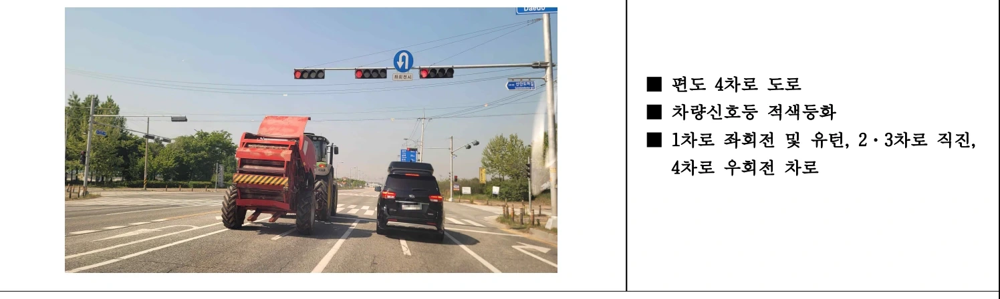

778. Hai cách lái xe nào là an toàn nhất trong tình huống sau?

- ①Trường hợp muốn đi thẳng, vì đèn tín hiệu dành cho xe ở phía trước là màu đỏ nên phải đi chậm rồi dừng lại sau xe phía trước một cách an toàn.
- ②Khi đèn tín hiệu dành cho xe chuyển sang màu xanh, đầu tiên tiếp tục đi trên làn đường hiện tại, đảm bảo đủ khoảng cách rồi chuyển làn đường một cách an toàn.
- ③Chuyển sang làn đường rẽ trái, khi đèn giao thông chuyển sang màu xanh thì nhanh chóng đi sang làn đường ngược chiều.
- ④Nếu đang đi sau xe máy kéo, thì có thể vượt lên trước ở bên phải của xe máy kéo.
- ⑤Trường hợp muốn quay đầu xe, có thể quay đầu xe khi đèn tín hiệu giao thông dành cho xe đang màu đỏ.
Xem đáp án
Đáp án
① Trường hợp muốn đi thẳng, vì đèn tín hiệu dành cho xe ở phía trước là màu đỏ nên phải đi chậm rồi dừng lại sau xe phía trước một cách an toàn.
② Khi đèn tín hiệu dành cho xe chuyển sang màu xanh, đầu tiên tiếp tục đi trên làn đường hiện tại, đảm bảo đủ khoảng cách rồi chuyển làn đường một cách an toàn.
Căn cứ
Nếu phía trước có máy nông nghiệp tốc độ chậm như máy xới đất, máy kéo thì tốc độ chậm hơn tốc độ của ô tô nên bạn phải theo dõi cẩn thận tiến trình của máy nông nghiệp trước khi lái xe. Thật nguy hiểm khi lường trước mọi việc và thay đổi mạnh mẽ hoặc cố gắng vượt lên. Việc vượt phải được thực hiện ở bên trái của xe phía trước, khi quay đầu xe phải tuân thủ thời gian theo biển báo.
Phần căn cứ là bản dịch máy để tham khảo.